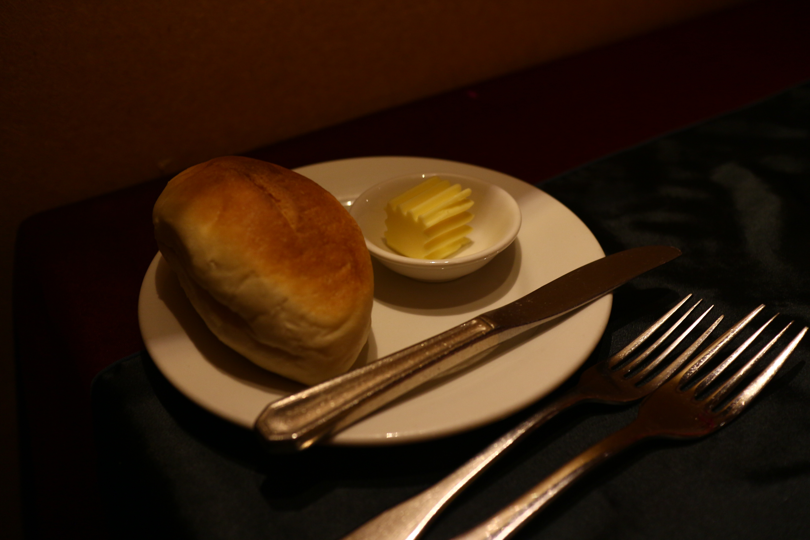

加入麵包丁增添了不同的口感。


2016.Oct.22
過去常聽聞沾美西餐廳的料理很好吃，看著自己不夠深的口袋，總是不敢貿然前往。
趁著今天打著慶祝的名義，終於第一次踏入傳說中的
沾美
!!!

餐廳位置
消費方式
相關資訊
今天選擇的是晚上的排餐消費方式。
每一份排餐包含的內容有:
其中，沙拉和甜點都在自助吧可以自由取用。
從踏入沾美的那一刻起，沈重的木質扶手椅、低調溫暖的餐廳裝潢與配色，像極了電視劇中出現的經典西餐廳，彷彿回到了未曾經歷的民國初年。

入座時，座位前已擺放著餐前的無酒精雞尾酒，是由果汁調製而成，喝起來酸酸甜甜的。

點完餐後，服務生送上溫熱的附餐麵包。
麵包的口感非常紮實，表皮像法國麵包的有嚼勁，內部濕潤而有彈性，配著附在一旁的奶油，不知不覺就吃的一點不剩。

緊接而來的是湯品，同伴與我分別點了洋蔥湯與南瓜濃湯，南瓜濃湯喝起來很濃郁，湯的質地濃稠卻不黏膩，南瓜熬煮至喝不到任何纖維，
加入麵包丁增添了不同的口感。
喝完湯，休息一下～起來走走順便到沙拉吧拿點蔬菜，沙拉吧的種類並沒有特別多，但生菜吃起來都滿新鮮的，比較特別的是水煮甜菜根和杏鮑菇，
切片煮的恰到好處，跟沙拉醬也意外的搭。

草吃完了當然就是今天的重頭戲-
主餐
!!!
同伴點了
美國角尖勒眼牛排
，油花分佈的很均勻，非常的甜美多汁，口感滑順，令人回味無窮。

我點的是
鮮鵝肝紐西蘭牛排
～第一次吃
鮮鵝肝
，入口即化的鮮甜滋味吮指難忘，雖然單獨吃有點油膩，和下方牛排搭配著吃有著天衣無縫的口感，
牛排的肉汁與鵝肝的油脂相融在口中，帶來了豐富的層次，每一口都是難以忘懷的享受。

飯後水果和甜點也是在沙拉吧自取，雖然品項不如自助式吃到飽那麼多元，水果大概有五種，甜點有西式的蛋糕點心和中式的仙草，也有快十種。
水果都很新鮮多汁，甜點不是非常精緻但味道也不差。


除了美味的食物之外，餐廳裡甚至有現場的鋼琴演奏，音樂伴隨著美食，提供了心靈與味蕾的雙重享受。

下次有機會一定會再去一次～